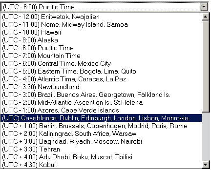
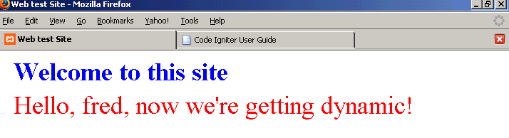
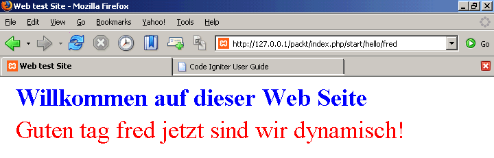
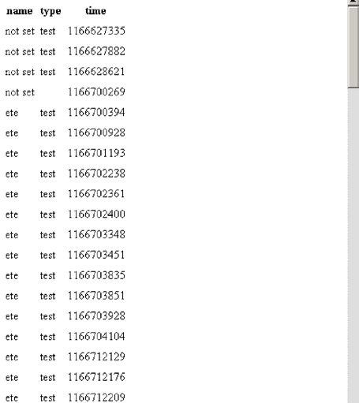

第十章 CI 如何帮助提供动态的数据
我们已经把许多想法放入我们正在构建的测试网站中，而且 CI 已经让这么一件复杂的事变得很容易。我们已经建立数据库, 使用了FTP协议, 构建了测试模块, 并且开始用电邮发送测试结果。但是有的时候我们容易注重技术的东西而忘记评判一个网站好坏的标准是它们在处理数据上有多好，以及它们适合用户操作的程度。
当你正在构建一个网站的时候，有几个类是经常用来帮助解决问题的, 特别地当它用来传递动态的数据给你的用户:
- 日期辅助函数转换不同的时间格式以及帮助你处理时区问题。
- 文本和 Inflector 辅助函数提供有用的功能操纵并且转换字符串。
- 语言类使编写以不同的语言显示相同的数据的网站比较容易。
- 表格类—帮助编写表格，不用写许多沉闷的 <tr><td>。
- 你能自动地为一个频繁存取的网页建立缓存。
它们中的每一个都能节约你的编程时间，并使你的网站看上去更专业(而且使它比较容易更新)。
10.1 日期辅助函数：转换和本地化日期
你知道哪些网站希望用户搞得懂机器日期? 比如说MySQL 的本地'timestamp' 格式是非常有用的，但是它看起来非常粗糙，让你的网站用户看到它好像:

20070124161830
或者像：
2007-01-24 16:18:30
当然，大多数的人能猜出它的意思，但是它给你的网站一种不专业和未完成的感觉。 CI 使用它的日期辅助函数解决这个问题，老规矩，需要装载:
$this->load->helper('date');
而且立刻提供给你许多有用的函数。 可以参考用户手册得到完整的资料。
日期能在许多不同的方法中被指定。 CI 的 standard_date() 功能显示同一个日期给你十个方法:
1: atom 2006-12-31T11:34:44Q 2: cookie Sunday, 31-Dec-06 11:34:44 UTC 3: iso 2006-12-31T11:34:44+0000 4: RFC 822 Sun, 31 Dec 06 11:34:44 +0000 5: RFC 850 Sunday, 31-Dec-06 11:12:34 UTC 6: RFC 1036 Sun, 31 Dec 06 11:34:44 +0000 7: RFC 1123 Sun, 31 Dec 2006 11:34:44 +0000 8: RFC 2822 Sun, 31 Dec 2006 11:34:44 +0000 9: RSS Sun, 31 Dec 2006 11:34:44 +0000 10: W3C 2006-12-31T11:34:44Q
你需要做的就是从中选择一个。 举例来说:
也有函数可以在不同格式的日期/时间值之间转换。 他们的名字是自明的，而且精确的语法在用户手册中有介绍。 他们使你能够非常简单地进行转换。
举例来说：
function converttimes() { $this->load->helper('date'); $mysql = '20070101120000'; $table = ''; $table .= "<table><tr><td width='50%'>Start with MySQL time<td>$mysql</td></tr>"; $utime = mysql_to_unix($mysql); $table .= "<tr><td>now convert to unix timestamp<td>$utime</td</tr>"; $htime = unix_to_human($utime); $table .= "</td></tr><tr><td>then back to 'human' time<td>$htime</td></tr>"; $ttime = gmt_to_local($utime, 'UP25'); $table .= "</td></tr><tr><td>now convert unix stamp to local time in Tehran<td>$ttime</td></tr>"; $ltime = unix_to_human($ttime); $table .= "</td></tr><tr><td>and say that in human time <td>$ltime</td></tr>"; $table .= "<table>"; echo $table; }
生成这样的结果:
Start with MySQL time 20070101120000 now convert to unix timestamp 1167652800 then back to 'human' time 2007-01-01 12:00 PM now convert unix stamp to local time in Tehran 1167661800 and say that in human time 2007-01-01 02:30 PM
你可以得到在这些函数后面的许多非常有用的代码，而且他们使设置时区非常容易。
日期辅助函数还有timezone_menu(), 一个产生时区下拉菜单的函数。你能让它与数据库一起工作，让网站的用户在使用时选择一个时区, 稍后可以显示出他们所在时区的准确时间。而实现这个只需要:
你会看到这样的界面：

看起来好像 CI 产生提供一个自动的方法去处理时区,在日期辅助函数中的now()函数。 用户手册建议你在你的 config 文件中设置‘主时间参数’为'local'或'gmt',使用:
$config['time_reference'] = 'local';
'local'是默认值。 如果你将它设定为 'gmt' ，代码似乎会返回基于PHP mktime()函数为基础的系统时间; 如果这样做无效, 你可将 config 文件设定为 'local' ，它返回以now() 函数为基础的时间。
然而，这两个做法都依赖你的服务器: 它必须被设定成正确的时间，而且它的默认时区一定要设定。 (你能用 phpinfo() 检查这一项。) 但是时区也可能没有设置，而且你的服务器可能也不与你在相同的时区中: 举例来说，这对大的公司来说相当普遍。
所以 CI 本身不知道你的时区差是什么, 虽然它可能取得到你服务器的时区差。 因此，如果你用了 timezone_menu() 取得用户所在区域的时区差，你可以以now()函数为基础，通过CI的日期函数将格林威治标准时间转换成他们的当地时区。你将需要找出他们的偏差，并且写出单独的代码来转换他们想要显示的时间。
10.2 使用文本和 Inflector 辅助函数
文本辅助函数有一系列的函数，可以帮助你用各种各样的方法操作文本。 在用户手册上查阅更详细的介绍。 我只是列举几个有用的东西。
word_limiter() 函数合理地截断你设定的长度的字符串。 word_wrap() 按你指定的长度回绕文本。 而word_censor()用指定字符串替换掉你不想要见到的字符串。
还有函数 ascii_to_entities() 可以帮助做到，在转换诸如MSWORD文本到HTML格式时出现奇怪字符时进行抑制。
Inflector 辅助函数提供函数将单数转换成复数，反之亦然，虽然它们处理不了不规则的单词像 'sheep/sheep' 和 'child/children', 也会犯一些错误,举例来说, 将 'day' 变成 'daies'。 他们还能处理 '骆驼'风格 、或处理在多个字之间的底线连接, 然后再把它们转换回来。
你从这些处理中找到乐趣，比如:
function converttext() { $this->load->helper('text'); $this->load->helper('inflector'); $mytext = "Mr Bill Gates is a man I like. He is a very clever man and writes superb software"; echo "$mytext<br />"; $disallowed = array('like', 'clever', 'superb'); $string = word_censor($mytext, $disallowed); echo "Censored, this might read: "; echo "$string<br />"; $mywtext = word_limiter($mytext, 3); $mytext = underscore($mywtext); echo " His name could be written like this $mytext"; $mytext = camelize($mywtext); echo "or like this $mytext"; }
将会给你这结果:
Mr Bill Gates is a man I like. He is a very clever man and writes superb software Censored, this might read: Mr Bill Gates is a man I ####. He is a very ###### man and writes ###### software His name could be written like this mr_bill_gates...or like this mrBillGates...
如果你正在接受其它来源的文本并且需要转换它或检查它，这些函数可能极其有用。 他们可能替你省下许多时间去写正则表达式。
10.3 国际化：语言类
如果你正在编写一个可能被许多国家的用户访问的网站，那么，CI 能以多种语言为你显示网页。它像这样工作:
首先，你标记显示给你的用户的文本需要翻译。 让我们回到我们在这一本书中讨论的动态的数据第一个例子。 你的welcome页可能被在编写一个模型中的代码调用:
function hello($name) { $data['mytitle'] = 'Welcome to this site'; $data['mytext'] = "Hello, $name, now we're getting dynamic!"; $this->load->view('testview', $data); }
被赋给$data数组的字符串是显示给用户的信息:

但是你可能知道使用者是一位德国人，可以通过他或者她的服务器的位置, 或可能地因为他或者她在登录时, 表明了语言偏爱。 如果你可以以德语向他或她问好，会很好。 CI 提供一个容易的方法做到这一点。
首先，你需要建立一个语言文件。 如果你曾经查看过系统文件夹，你将会看到那里有一个语言目录里面有一个英文子目录。依次包含一系列的文件-举例来说, unit_test_lang.php。 这是一个PHP文件，很简单地定义了显示给用户的表达式数组：
<?php $lang['ut_test_name'] = 'Test Name'; $lang['ut_test_datatype'] = 'Test Datatype '; $lang['ut_res_datatype'] = 'Expected Datatype'; $lang['ut_result'] = 'Result'; // etc etc/// ?>
数组的值是你要显示的表达式, 数组的键是你想要使用的识别他们的标记。文件名一定以 '_lang' 结束。
我们需要建立我们自己的,我们想要表示的每一种语言。 让我们调用第一个welcome_lang.php，并把它保存到system/language/English子目录，它看起来像这一样:
<?php $lang['welcome_title'] = 'Welcome to this site'; $lang['welcome_text1'] = 'Hello '; $lang['welcome_text2'] = " now we're getting dynamic"; ?>
数组的键名可以是你喜欢的任何字符串: 但是给他们加个前缀是一个好主意,为测试语言数组单元加上 'ut' , 和 'welcome' 为我们刚才写的数组。 他们都放入同一个基本数组，因此，如果你不注意地用同一键名对应两个值，第二个将会覆盖第一个。
最初的函数建立需要修改的网页。 首先，你需要装载语言文件。 在这个例子中，我已经把它包含在函数中，但是通常，把它放在类的构造函数中比较有意义。注意虽然文件名字以_lang(welcome_lang.php)结尾, 当你装载它的时候，你需要省略这个后缀.(也就是你装载 'welcom', 而不是'welcome_lang') 第二，你使用数组的键代码实际的文本-那就是说:
function hello($name) { $this->lang->load('welcome'); $data['mytitle'] = $this->lang->line('welcome_title'); $data['mytext'] = $this->lang->line('welcome_text1'); $data['mytext'] .= $name; $data['mytext'] .= $this->lang->line('welcome_text2'); $this->load->view('testview', $data); }
但是这还是只给了我们和以前一样的页: 它仍然是英语。 如果我们想要翻译成德语，我们需要另外的一个语言文件。 首先，我们建立一个新的子目录: 在system/language/english的同一级，我们建立system/language/german。在新的文件夹中，我们保存一个与英语版本一样的文件: 'welcome_lang.php'。
这一个文件和英语的那个内容基本一样，至少在数组的左边。 键名是相同的，但是数组现在在右边会放上德语。
<?php $lang['welcome_title'] = 'Willkommen auf dieser Web Seite'; $lang['welcome_text1'] = 'Guten tag '; $lang['welcome_text2'] = 'jetzt sind wir dynamisch!'; ?>
(恐怕你必须自己做翻译-CI不为你做那个!)
剩下一件事要做。 当最初的 'hello' 函数装载语言文件：
$this->lang->load('welcome');
它没有指定哪一个语言, 因此默认值是英语的。 你可以想像，默认语言在 'config' 文件中被指定:
$config['language'] = "english";
为了要变成德语，在 'hello' 函数的语言载入表达式应该附加指定为保存德语数组的目录。 (非常合乎逻辑地，这是 'german' 。)
因此函数现在是:
function hello($name) { $this->lang->load('welcome', 'german'); $data['mytitle'] = $this->lang->line('welcome_title'); $data['mytext'] = $this->lang->line('welcome_text1'); $data['mytext'] .= $fred; $data['mytext'] .= $this->lang->line('welcome_text2'); $this->load->view('testview', $data); }
而且产生的页看起来就是个德文网站：

我们现在需要做的将确定我们的函数动态地装载正确的语言。
假定我们已经检测到用户的语言偏爱, 并且把它保存到变量$user_language_pref，我们需要点东西来有条件地装载语言文件,像这:
if ($user_language_pref == 'german') {$this->lang->load('welcome', 'german');} elseif ($user_language_pref == 'french') {$this->lang->load('welcome', 'french');} // etc etc
要训练自己编写这样的代码。你必须记住永远不要放真正的文本到你的代码中，每次用语言文件产生一个输入。但是一旦你已经这样做了，你就必须将语言文件让人转换成你的目标语言，而且你的网站在翻译中神奇给出对应的语言显示。如果你改变网站的语种，你只需要改变语言文件。如果使用某个表达式不止一次，你不需要从整个网页查找需要需要的地方。
如果你的网站使用复杂文本的较长伸展，用这种方法不太好处理。但是这样的长文本不会散布在每个网站的各处，CI 的语言类应该工作得很好，并使你的网站更加令人印象深刻。
10.4 编写 HTML 表格的好方法：表格类
我已经使用 CI 有好几个月了，但是我还在发现使生活变得更容易的函数。
这里有一个好例子, 对任何一个花费许多时间写这种东西的人来说是个好消息:
CI 的表格类允许你自动生成HTML标记。 让我们显示我们已经运行的一些测试的细节。 你需要装载这个类, 跟其它类一样。 然后你能指定表格数据作为数组, 像这样:
$this->load->library('table'); $data = array( array('name', 'type', 'time'), array('test 1', 'ping', '1166627335'), array('test 2', 'ping', '1166627335'), array('test 3', 'ete', '1166702400') ); echo $this->table->generate($data);
但是当你从一个数据库查询中返回数据时你能自动地直接生成函数需要的数据。举例来说, 下面这段代码:
function dotable() { $this->load->database(); $this->load->library('table'); $query = $this->db->query("SELECT name,type,time FROM events"); echo $this->table->generate($query); }
给你的查询结果直接生成HTML表格。真是省事，虽然默认的格式不那么好看!

代码只有四行，就完成了把数据从数据库表中读出并以HTML表格形式显示。事实上，当我想到我过去一直花费大量时间写实现类似功能代码的时候，眼泪都要下来了:
同时，你能看到，CI的默认输出格式不是太精彩，你能设定你自己的模板, 可以使用 CSS 风格做出你想要的效果，而且函数会忠实实现它。 模板是放在表格类里的一个数组，因此你需要重新设定它，在每一次调用这个类的时候。
$tmpl = array ( 'table_open' => '<table border="0" cellpadding="4" cellspacing="0">', 'heading_row_start' => '<tr>', 'heading_row_end' => '</tr>', 'heading_cell_start' => '<th>', 'heading_cell_end' => '</th>', 'row_start' => '<tr>', 'row_end' => '</tr>', 'cell_start' => '<td>', 'cell_end' => '</td>', 'row_alt_start' => '<tr>', 'row_alt_end' => '</tr>', 'cell_alt_start' => '<td>', 'cell_alt_end' => '</td>', 'table_close' => '</table>' ); $this->table->set_template($tmpl);
有默认的模板数组,看起来像这个一样, 函数基于这个数组而设计。注意有两组行定义（row和 row_alt), 以防万一你想要进行颜色轮换。
如果你提交对模板的修改, 函数会作出改变,产生不同的 HTML 表格效果。
你将会注意到模板只是一个数组，而且你只是通过修改每个键对应的值来改变输出效果，举例来说，如果你有一个CSS文件，里面定义了一个叫做 mytable 的类，你能这样做:
你不一定要改变每个值: 那些你不改变的键保留为默认值。
现在你的表格神奇地以你新设定的格式显示。
10.5 缓存网页
到现在为止，我们正在写一些相当复杂的代码。 服务器必须停下来分析每个动态生成的网页。你可以很简单地编写一个函数像上面的dotable()，但是，可怜的老服务器不得不做更多的工作来生成结果。
有时候，这能导致你的页面显示起来比较慢。 对这点可能没有什么好办法。如果你正在写报告，每次写得都不一样，你只能等待。然而，你可能生成将会保持一段时间内容不变的网页。比如说一篇博客，在你提交下一篇之前，你没有什么变化，如果有一千个读者来看你的博客，每个视图都是一样的，而你却需要浪费时间去动态生成同样的页面，一次又一次。
解决之道是缓存网页。你一次生成网页，然后把生成的HTML文件保存在缓存目录中，加上一个时间戳，然后被显示到用户的浏览器上。然后，当一下个读者请求页面时，系统检查离上次生成和保存有多长的间隔，如果还在你设定的时间范围内，它继续返回缓存页面，如果不是，它将更新页面。
听起来这里像需要一些复杂的编程工作，其实如果你使用CI，你只需要做两件事情：
找到你网站中的/system/cache目录，它应该是空的, 除了一个index.html文件。 确定此目录是可读写的-也就是如果在Linux系统上，权限设为666。
插入, 在一个产生 HTML 页的控制器的函数中加上：
$this->output->cache(5);
5是你想要你的缓存持续的分钟数，即在页面被重新生成前会持续多长时间使用静态HTML文件。
搞定。 如果你现在装载函数，你将会像往常一样见到页面被装载。 如果你现在观察你的 /system/cache目录,当然，你将会在那里里面见到一个新的文件,有一个无意义的名称。
把它在一个文本编辑器里打开，你将会见到它包含 HTML 代码, 加上一个时间戳。如果你请求相同的页，在五分钟之内，你将会得到被缓存的页面。超过这个时间段，你的下一次请求将会自动地删除它而且用一个较新的版本替代它。
如果你不想缓冲页面, 从你的控制器中删除this->output->cache(5)这一行，你的页面将每次刷新。 (最后一个被保存的文件将会留在你的 /system/cache目录，直到你手工删除它。) 如果你想要继续缓冲, 但是偶然地删除一个缓存文件, 不要紧张; 当那一页下一次被调用时，系统将会产生新的。
CI让这一切变得快和简单，它正在试着缓存每一页！只是要记住这一点：要缓存内容不频繁改变的页面，其它情况就不要使用缓存功能。
10.6 总结
CI 给你提供了很多好东西，使你编程更容易并且让你的网站更专业。本章介绍了下面五个东西：
- 文本和 Inflector 辅助函数提供有用的函数操作并且转换字符串。
- 日期辅助函数让你在不同的日期格式之间转换以及应付时区。
- 语言类使你编写多语言网站比较方便，满足使用者语言偏爱比较容易。 唉, 你仍然必须自己做翻译!
- 表格类让你输出适当的HTML表格, 直接地从一个数据库查询中产生的数据可以输出到漂亮的HTML表格中。
- 自动地缓存高负荷动态网页提供一个较快速的响应。